Sezioni eliminate dalla vecchia versione del sito.
| Master's Thesis. (Pdf) (LaTex) (Slides) | |
| (ITA) Bachelor's Thesis. (Pdf) (LaTex) (Slides) | |
| (WIP) Notes on Fiber Bundle. (Pdf) (LaTex) | |
| (WIP) AQFT mathematical preliminaries. (Pdf) (LaTex) | |
| .... |
| (COURSE PROJECT) (ITA) Condensation algorithm in CUDA. (Report) (Source) (Slides) | |
| (COURSE PROJECT) (ITA) Ising Simulation. (Report) (Source) | |
| (COURSE PROJECT) (ITA) Molecular Dynamics. (Report) (Source) | |
| (COURSE PROJECT) (ITA) Numerical Analysis Computer Lab. (Report+Src) | |
| .... |
| (COURSE NOTE) (ITA) Appunti di Fisica delle Proteine. (OneNote) | |
| (COURSE NOTE) (ITA) Appunti di Elettrodinamica Classica. (OneNote) | |
| .... |
Old Bio: (2019) Antonio Michele Miti
Differential geometer working in homotopical methods in (multi)symplectic geometry and physics.
Antonio Michele Miti is a doctoral candidate in Mathematics in the "International Doctoral Programme in Science", jointly promoted by Università Cattolica del Sacro Cuore and KU Leuven and supported by a 4-year scholarship.
Currently, he is located in Leuven, where is working on a research project entitled "Homotopy momentum maps in multisymplectic geometry" under the supervision of professors Mauro Spera and Marco Zambon.
In his thesis, he focused on the notion of Homotopy moment maps, the higher analogue of the ordinary comoment map in the context of multisymplectic geometry, investigating new explicit construction of non-trivial instances of these objects with possible application in different areas of mathematics and physics.
Antonio's research interests lie primarily in the field of differential geometry. His daily work revolves around higher geometrymethods in symplectic and multisymplectic geometry and, above all, he is interested in homotopy structures inspired by geometry and physics (geometric mechanics, classical field theories and quantization).
Before his present position, he studied physics, with an emphasis on mathematical methods in theoretical physics. He obtained a Master in Science (LM Fisica) 2010 from "Università degli Studi di Milano", with a thesis on Algebraic quantum field theories supervised by professor Claudio Dappiaggi (UniPv).
Beyond his research in geometry, Antonio is also interested in computer programming, especially functional programming and interactions with category theory.
During his studies, his collaboration with the computation lab (LCM, Università di Milano), and his internship at CST tech, he developed expertise in several programming languages(e.g. Java, Python, Cuda) and Linux systems administration.
He also enjoys tinkering with electronics in his free time, especially computer assembly and gaming.
 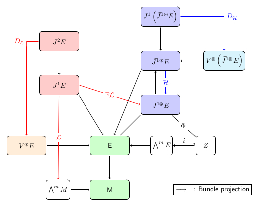
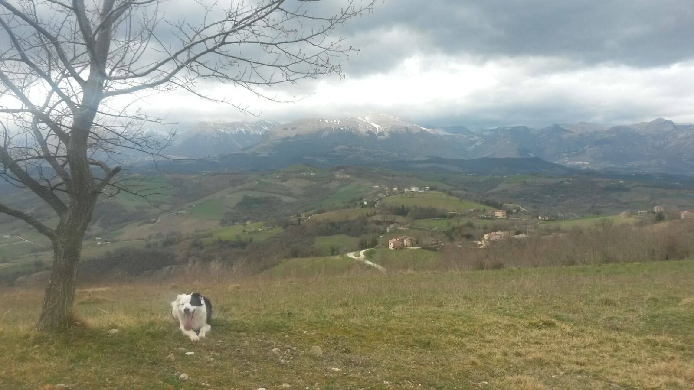
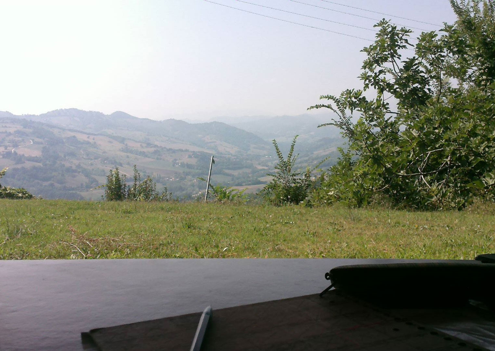
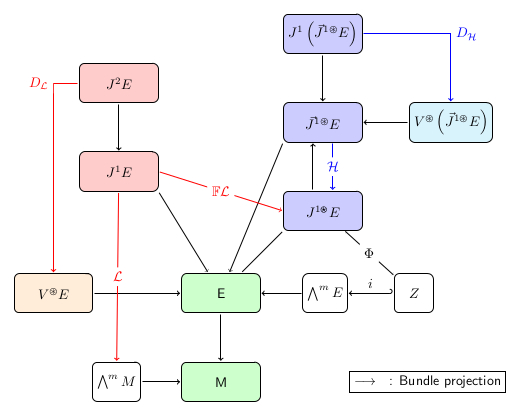
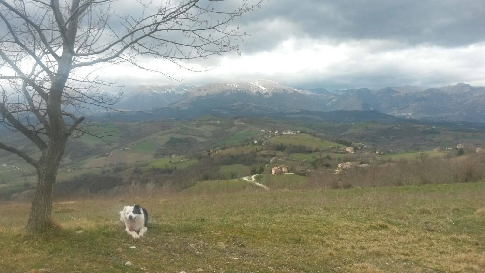
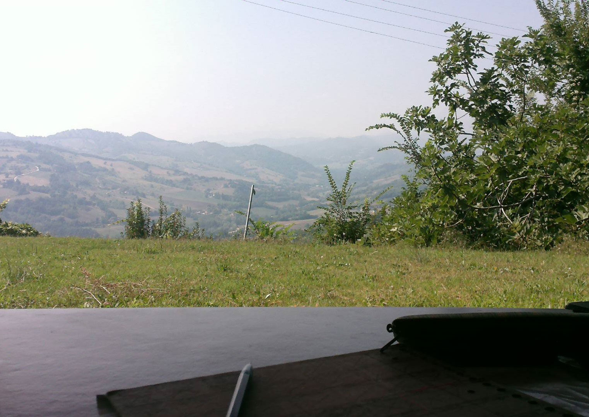
 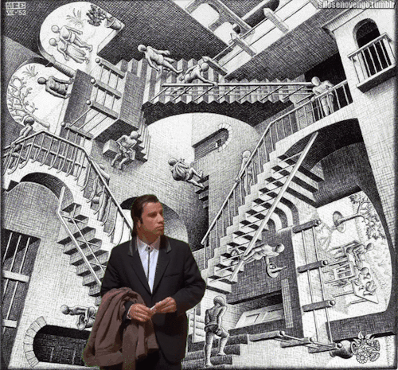
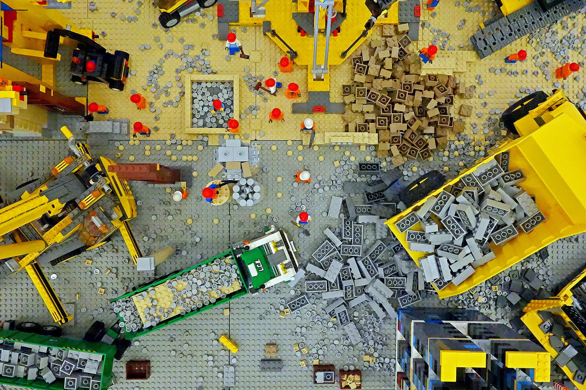
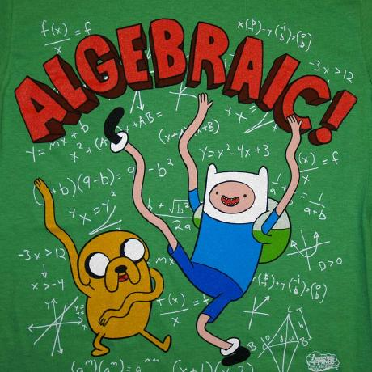
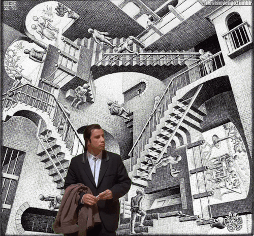
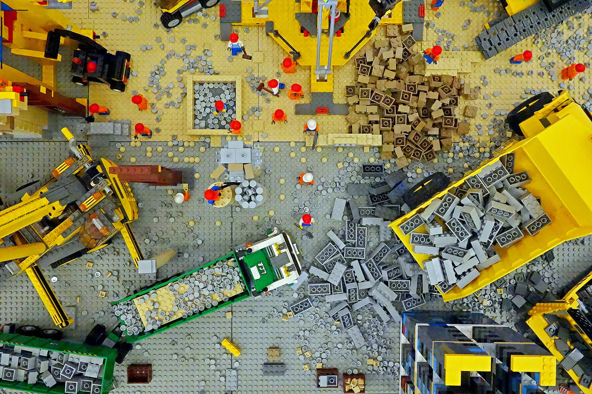
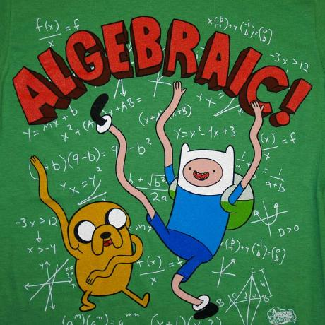